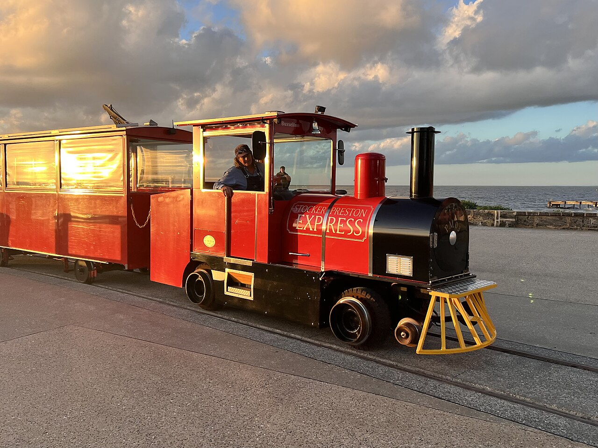
手绘地图
这版改为纯南线：珀斯机场适应，房车南下 Busselton 和 Margaret River，经 Karri Valley、Denmark 分段回 Fremantle，最后上 Rottnest Island。
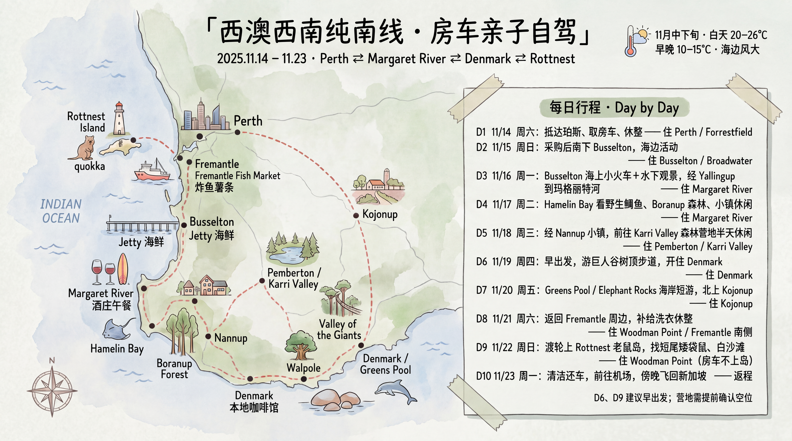
整体行程表
先看总览，再进入后面的单天行程。车程为保守估算，实际以当天导航、道路施工和天气为准。
| 日期 | 路线 | 夜宿区域 | 核心安排 | 驾驶 | 预订提醒 |
|---|---|---|---|---|---|
| D1｜11/14 周六 | Singapore → Perth Airport | Perth / Forrestfield | 11:25 新加坡起飞，16:35 抵达珀斯；入境、取行李，晚餐休息。 | 本地短途 | 必订：机场附近住宿。 不提车：房车改到 D2 处理；若房车公司可延时交车，仅作为备选。 |
| D2｜11/15 周日 | Perth / Forrestfield → Busselton | Busselton / Broadwater | 取房车、熟悉操作、超市采购；南下 Busselton，15:00-16:00 入营，玩营地设施或海边散步。 | 230-260 km / 3-3.5 小时 | 必订：Mandalay Holiday Resort、房车交接。 必做：采购、燃气/水电/排污操作确认。 |
| D3｜11/16 周一 | Busselton → Yallingup → Margaret River | Margaret River | 09:00 或 10:00 Busselton Jetty 小火车 + 水下观景馆；午餐后经 Yallingup，Ngilgi Cave 按体力决定。 | 90-120 km / 1.5-2 小时 | 建议订：Busselton Jetty 小火车/观景馆、Ngilgi Cave。 可删：玩不动就取消洞穴。 |
| D4｜11/17 周二 | Margaret River → Hamelin Bay → Boranup → Margaret River | Margaret River | 上午 Hamelin Bay 找野生鳐鱼、玩沙；下午 Boranup 森林、玛河小镇、冰淇淋或回营地休息。 | 100-130 km / 1.5-2.5 小时 | 当天确认：Hamelin Bay 风浪和野生动物情况。 无需订：森林、小镇散步。 |
| D5｜11/18 周三 | Margaret River → Nannup → Karri Valley | Beedelup / Pemberton 周边 | 09:30 出发，经 Nannup 短逛和午餐；入住 Karri Valley 后湖边散步、迷你高尔夫或动物农场。 | 150-180 km / 2.5-3 小时 | 必订：RAC Karri Valley Resort 房车营地区。 当天确认：湖边项目、迷你高尔夫、动物农场开放。 |
| D6｜11/19 周四 | Karri Valley → Walpole → Valley of the Giants → Denmark | Denmark | 08:30-09:00 出发，经 Walpole 休息午餐；12:30-14:30 巨人谷树顶步道和地面巨树步道；傍晚到 Denmark。 | 190-220 km / 3-3.5 小时 | 必订：BIG4 Denmark Ocean Beach Holiday Park。 建议订：Tree Top Walk 门票或至少行前确认开放。 |
| D7｜11/20 周五 | Denmark → Greens Pool / Elephant Rocks → Kojonup | Kojonup | 上午 Greens Pool / Elephant Rocks 控制 1-1.5 小时；若施工或天气不适合，改 Denmark 小镇或 Albany 备选；午餐后北上 Kojonup。 | 220-260 km / 3-4 小时 | 必订：Kojonup Caravan Park。 弹性：Denmark 海岸施工、风浪和天气当天决定。 |
| D8｜11/21 周六 | Kojonup → Woodman Point / Fremantle | Woodman Point / Fremantle 南侧 | 09:00 出发返程，中途停车活动和午餐；14:00-15:00 入营，补给、洗衣、整理上岛背包。 | 250-290 km / 3-4 小时 | 必订：Discovery Parks - Woodman Point 第 1 晚。 必做：整理 Rottnest 背包和码头接送安排。 |
| D9｜11/22 周日 | Woodman Point → Fremantle Ferry → Rottnest Island | Woodman Point / Fremantle 南侧 | 房车留营地，接送去 Fremantle 码头；约 09:00 上岛，Thomson Bay 找短尾矮袋鼠，Pinky Beach 玩沙，约 16:00 回大陆。 | 房车可不移动；渡轮单程约 30 分钟 | 必订：Rottnest 往返船票、码头接送。 建议订：岛上自行车/巴士按体力决定。 |
| D10｜11/23 周一 | Woodman Point → 租车门店 → Perth Airport | 离开 | 早餐、打包，清洁、排污、加油；12:30-13:30 还车，14:30 左右到机场，17:50 起飞。 | 40-70 km / 1-1.5 小时 | 必确认：还车时间、清洁排污标准、加油规则、机场到达时间。 |
露营地选择
按每天住宿地段重新筛选：优先公开评分高、评论量足、亲子设施强、适合房车停靠且不偏离当天路线的营地。
| 日期 / 地段 | 收费营地推荐 | 不收费 / 低成本备选 | 怎么选 | 确认重点 |
|---|---|---|---|---|
| D1｜Perth / Forrestfield | 机场附近酒店优先 若临时可提车，可看 Discovery Parks - Perth Airport powered site。公开评分约 4.3 / 500+ Google reviews，订房平台约 8.6。 价位：酒店约 AUD 160-280+；powered site 约 AUD 50-90。 | 不推荐免费过夜 珀斯都市区不要随意睡车或停路边，容易违规。 价位：不适用。 | D1 已按“不提车”执行，住酒店最稳；如果真的能提车，Discovery Perth Airport 是机场周边口碑相对稳的房车点。 | 机场接送、晚到入住、第二天去取车门店交通。 |
| D2｜Busselton / Broadwater | Mandalay Holiday Resort Anycamp 家庭友好榜列入 Busselton 前列，West Busselton 榜单信息显示它是强亲子选择；Anycamp 标注 8 Ratings、119 sites、water slide、powered sites、showers、dump spot、laundry、kids play park。 价位：powered site 约 AUD 70-130 / 晚，假期可能更高。 | Capel RV Stop 免费 24 小时类 RV stop，约 26 km 离 Busselton；只作为营地满房或预算备选。 价位：通常免费，按现场标识复核。 | 保留 Mandalay：它最贴合 Broadwater 地段和亲子需求；若满房，再查 RAC Busselton 或 BIG4 Breeze。 | powered site、房车尺寸、late check-in、儿童设施开放；满房时查 RAC Busselton / BIG4 Breeze。 |
| D3-D4｜Margaret River | Big Valley Campsite Anycamp Margaret River top-rated #3，9 Ratings；有 powered sites、caravans、dump spot、laundry、showers，并有羊、豚鼠、鸡等亲子农场感。 价位：powered site AUD 48 / 晚。 | Alexandra Bridge Campground 低成本河边营地，不是免费；Margaret River Shire 内不建议找非指定免费露营。 价位：约 AUD 10 / 成人、AUD 5 / 儿童起。 | 如果想要“真正营地体验”，优先 Big Valley；如果想步行进镇、吃饭更方便，备选 Riverview Tourist Park。 | Big Valley 到镇上约十多分钟车程；确认 powered site、车辆长度、dump point、孩子动物互动时间。 |
| D5｜Beedelup / Pemberton / Karri Valley | RAC Karri Valley Resort 不是 Anycamp Pemberton 榜首，但它最贴合你 D5 的湖边森林恢复体验；订房平台约 8.8，位置评分约 9.6。 价位：powered caravan site AUD 51 / 晚。 | Big Brook Arboretum Anycamp Pemberton top-rated #2，低成本森林营地；厕所、caravan / camper trailer、non-drinking water，约 AUD 8 / 人。 价位：约 AUD 8 / 人，通常先到先登记。 | 如果 D5 目标是孩子休整和湖边活动，选 RAC；如果只想省钱和森林露营，Big Brook 比 Willow Springs 信息更清楚。 | RAC 房车营地区、车辆长度、湖边活动开放；Big Brook 无电、无饮用水，夜间更冷。 |
| D6｜Denmark / Ocean Beach | BIG4 Denmark Ocean Beach Holiday Park Anycamp Denmark top-rated #1，8 Ratings；标注 powered sites、dump spot、laundry、kids play park、walking trails、swimming 和常见袋鼠。 价位：powered site AUD 49 / 晚。 | Parry Beach Campground 低成本非 powered，一般先到先得；不是免费，且有高度限制和无饮用水限制。 价位：约 AUD 25 / site 前 2 人，儿童另计约 AUD 3。 | Anycamp 也支持 BIG4 作为 Denmark 首选；Parry Beach 更像省钱和海边露营备选，不适合晚到。 | powered site、2.7 m 左右高度限制、无饮用水、不可预订、旺季满位风险。 |
| D7｜Kojonup | Kojonup Caravan Park Anycamp Kojonup top-rated #2；标注 powered sites、drinking water、BBQ、laundry、phone reception，G'Day Parks 约 4.5 / 5。 价位：约 AUD 30-50 / 晚，powered site 可能更高。 | Kojonup RV Rest Stop Anycamp Kojonup top-rated #1；有 toilets、drinking water、phone reception、dump spot，是低成本中转备选。 价位：约 AUD 5 / 晚。 | 带孩子转场日选 Caravan Park 更稳；只想睡一晚且车完全自给自足，再考虑 RV Rest Stop。 | 是否需自助付款、dump point、水、厕所开放时间、车辆自给自足要求。 |
| D8-D9｜Woodman Point / Fremantle 南侧 | Discovery Parks - Woodman Point Anycamp Fremantle top-rated #1，8 Ratings；标注 powered sites、dump spot、laundry、kids play park，适合去 Rottnest 前后连住。 价位：powered site AUD 74 / 晚。 | 不推荐免费过夜 Fremantle / Perth metro 免费睡车风险高；若必须省钱，只考虑远离市区的正规 24 小时 RV stop。 价位：不适用；合法低成本点通常会远离码头。 | Anycamp 也支持 Woodman Point；它同时满足 Rottnest 码头接驳、洗衣、停车和还车前整理。 | 两晚连住、停车安全、码头接送、洗衣、还车前清洁和排污。 |
营地已按 Anycamp 同区域榜单重新筛过；Anycamp 的榜单更偏真实露营者体验，但部分营地评分样本很少，所以仍要结合 Google、官网、房车尺寸和当天路线判断。价位为规划阶段估算，单位为 AUD / 晚，实际会随日期、会员价、人数、powered / unpowered site 和车辆尺寸浮动；出发前请再用官网、Google Maps、WikiCamps / CamperMate 和当地 Visitor Centre 复核。
单天行程
每天保留“早点出发、下午留缓冲、傍晚看光线”的节奏，适合带孩子的自驾家庭。
DAY 0111/14 周六 · 抵达珀斯不提房车，机场附近休整
＋
不提房车，机场附近休整
SingaporePerth AirportForrestfield / Airport Hotel
上午
11:25 从新加坡起飞，飞机上尽量让孩子补觉，抵达后不安排任何远郊活动。
下午
16:35 抵达珀斯，入境、取行李后直接去机场附近住宿；房车交接改到 D2，避免傍晚培训和开车压力。
晚上
简单晚餐、洗漱休息。若需要买少量水和早餐，只做附近超市短补给。
DAY 0211/15 周日 · 房车南下取车采购，移动到 Busselton
＋
取车采购，移动到 Busselton
Perth / ForrestfieldRV HandoverSupermarketMandalay Holiday Resort
上午
取房车并认真过一遍水、电、燃气、排污、遮阳棚、儿童座椅和限高；随后做一次大采购。
下午
直接南下 Busselton，中途午餐和休息即可，不再塞景点。目标 15:00-16:00 入营。
晚上
熟悉营地设施、让孩子放电；有余力再去 Busselton 海滨散步。
DAY 0311/16 周一 · Busselton / Yallingup海上小火车与洞穴可选
＋
海上小火车与洞穴可选
Busselton JettyUnderwater ObservatoryYallingupNgilgi CaveBig Valley Campsite / Margaret River
上午
退营后去码头，优先预约 09:00 或 10:00 的海上小火车 + 水下观景馆，结束后在海边午餐。
下午
经 Yallingup 去 Ngilgi Cave；如果大家玩不动，直接删洞穴去 Margaret River 入营，不影响主线。
晚上
优先入住 Big Valley Campsite 第 1 晚；若想步行进镇或 Big Valley 满房，再用 Riverview Tourist Park，补给和洗衣按营地情况处理。
DAY 0411/17 周二 · Margaret RiverHamelin Bay、森林与小镇休闲
＋
Hamelin Bay、森林与小镇休闲
Margaret RiverHamelin BayBoranup ForestMargaret River Town
上午
约 09:00 出发去 Hamelin Bay，找野生鳐鱼、玩沙，控制 1-1.5 小时；不追、不摸、不投喂。
下午
午餐后沿途欣赏 Boranup Forest；回 Margaret River 小镇逛店、吃冰淇淋，或直接回营地休息。
晚上
继续住同一个 Margaret River 营地第 2 晚，不换营地，给孩子留恢复时间。
DAY 0511/18 周三 · Karri ValleyNannup 小镇与森林营地
＋
Nannup 小镇与森林营地
Margaret RiverNannupBeedelupRAC Karri Valley Resort
上午
约 09:30 出发，经 Nannup 小镇短逛和午餐；这天重点是转场，不要再加洞穴或酒庄。
下午
前往 Karri Valley，入住后按开放情况选湖边散步、迷你高尔夫或动物农场，最多安排两项。
晚上
在森林营地放慢节奏，整理车内物资，为第二天去 Denmark 提前准备早餐和路餐。
DAY 0611/19 周四 · 巨人谷到 Denmark树顶步道与南部森林
＋
树顶步道与南部森林
Karri ValleyWalpoleValley of the GiantsDenmark
上午
08:30-09:00 出发，经 Walpole 一带停车休息和午餐；房车日不要把抵达时间压太晚。
下午
12:30-14:30 游 Giant Valley Tree Top Walk + 地面巨树步道；恐高或风大时减少树顶停留。
晚上
开往 Denmark，入住 BIG4 Denmark Ocean Beach Holiday Park，晚餐简单解决。
DAY 0711/20 周五 · Denmark 海岸 / 返程中转Greens Pool 弹性游玩，到 Kojonup
＋
Greens Pool 弹性游玩，到 Kojonup
DenmarkGreens PoolElephant RocksKojonup Caravan Park
上午
优先游 Greens Pool / Elephant Rocks 观景区域，控制 1-1.5 小时；若施工或天气不适合，改 Denmark 小镇散步或 Albany 室内/海岸备选。
下午
午餐后北上 Kojonup，途中休息，争取 16:00-17:00 入营。
晚上
这是返程中转日，不额外塞景点；小镇晚餐和营地休息优先。
DAY 0811/21 周六 · 回到 Fremantle 南侧返程、洗衣、整理上岛背包
＋
返程、洗衣、整理上岛背包
Kojonup中途午餐Woodman PointFremantle South
上午
约 09:00 出发返回 Fremantle 周边，按孩子状态安排中途停车活动和午餐。
下午
14:00-15:00 入住 Discovery Parks - Woodman Point，补给、洗衣、整理大部分行李。
晚上
准备第二天上岛背包：防晒、帽子、水、泳衣、薄外套、零食和充电宝。
DAY 0911/22 周日 · Rottnest Island短尾矮袋鼠、海岛小镇与白沙滩
＋
短尾矮袋鼠、海岛小镇与白沙滩
Woodman PointFremantle FerryThomson BayPinky BeachFremantle
上午
房车留营地，另安排接送去 Fremantle 码头；目标约 09:00 乘船上岛，先在 Thomson Bay 小镇找短尾矮袋鼠。
下午
Pinky Beach 玩沙、午餐，按体力看 Bathurst 灯塔外部；不追全岛，保留回船缓冲。
晚上
目标约 16:00 乘船回大陆，晚上回 Woodman Point 第 2 晚。
DAY 1011/23 周一 · 还车离开清洁排污、还车、飞回新加坡
＋
清洁排污、还车、飞回新加坡
Woodman PointDump PointFuelRV ReturnPerth Airport
上午
早餐后打包，按合同要求清洁、排污、加油，确认车内抽屉、冰箱和储物舱。
下午
建议 12:30-13:30 还车，14:30 左右到机场，给国际航班和值机安检留缓冲。
晚上
17:50 起飞，23:05 抵达新加坡。
重点景点信息
按 11/14-11/23 房车南线重新梳理，覆盖这次表格里出现的主要景点、短暂停留点和天气备选。
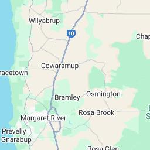
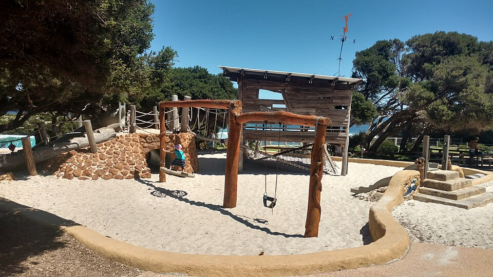
YALLINGUP · D3 顺路
Yallingup 海岸短停
如果小朋友状态好，可在进洞前后做 20-30 分钟海岸短停，不作为硬任务。
所在行程：D3 11/16 顺路
地址：Yallingup Beach WA 6282
亮点：海岸视野、短步道、车程衔接自然。
注意：风大或停车麻烦就直接去 Margaret River 入营。
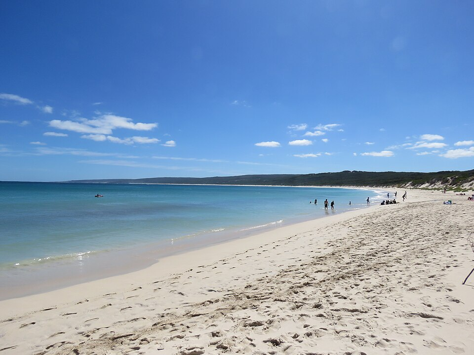
MARGARET RIVER · D4
Hamelin Bay
D4 的海滩主点，以远观野生鳐鱼、玩沙和轻松拍照为主。
所在行程：D4 11/17
地址：Hamelin Bay WA 6288
亮点：白沙滩、浅色海湾、野生鳐鱼。
注意：不触摸、不投喂、不追赶；浪大风大时缩短停留。
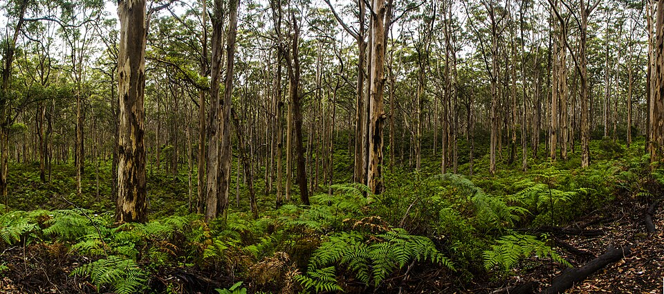
BORANUP · D4
Boranup Forest
Hamelin Bay 回程的森林公路和短暂停留点，用很小体力换到西澳南部森林感。
所在行程：D4 11/17
地址：Boranup Dr, Boranup WA 6286
亮点：Karri 林、森林光影、公路停车拍照。
注意：房车根据路况选择是否深入，雨后慢开。
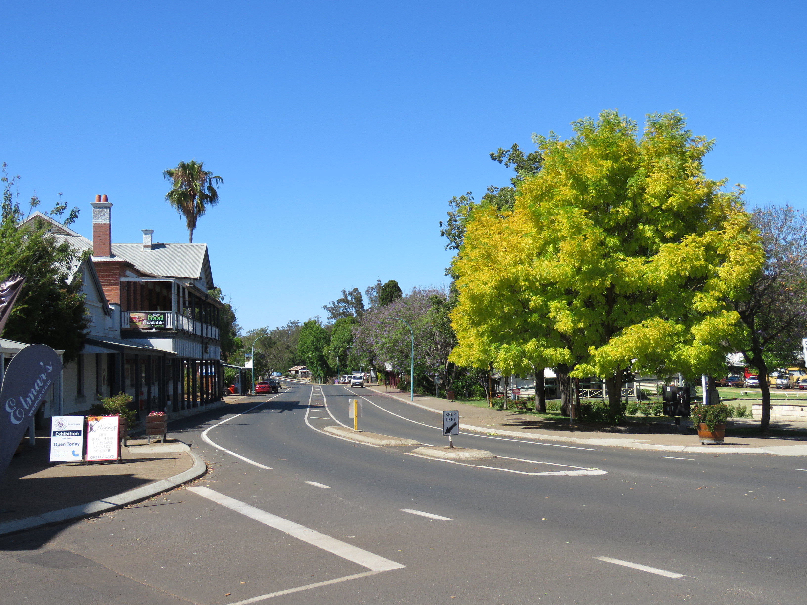
NANNUP · D5 中停
Nannup 小镇
Margaret River 到 Karri Valley 中间的休息点，适合午餐、咖啡、上厕所和补一段孩子放风时间。
所在行程：D5 11/18
地址：Nannup WA 6275
亮点：乡镇主街、咖啡店、Blackwood River 周边。
注意：这里是转场休息，不建议加长成深度游。
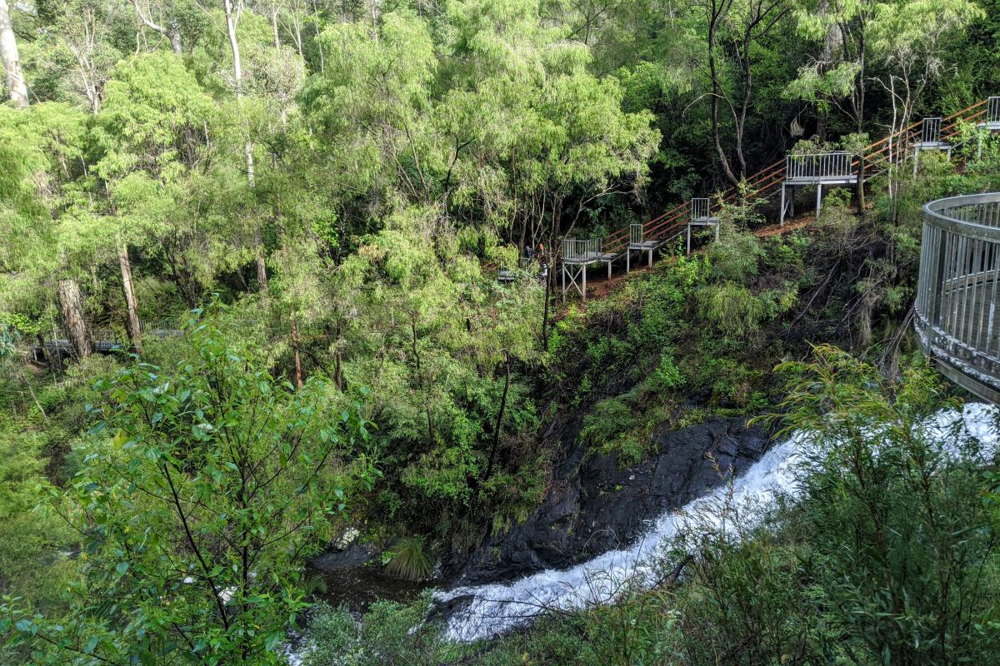
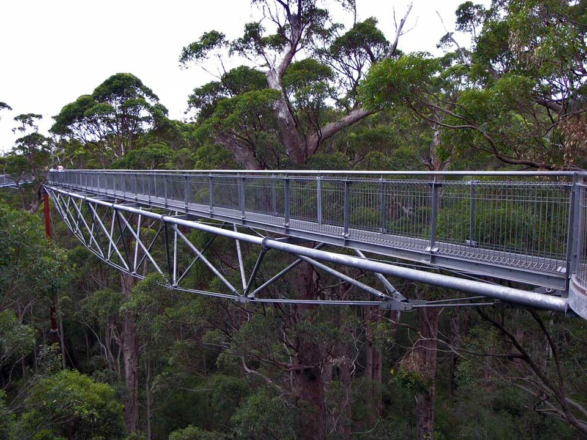
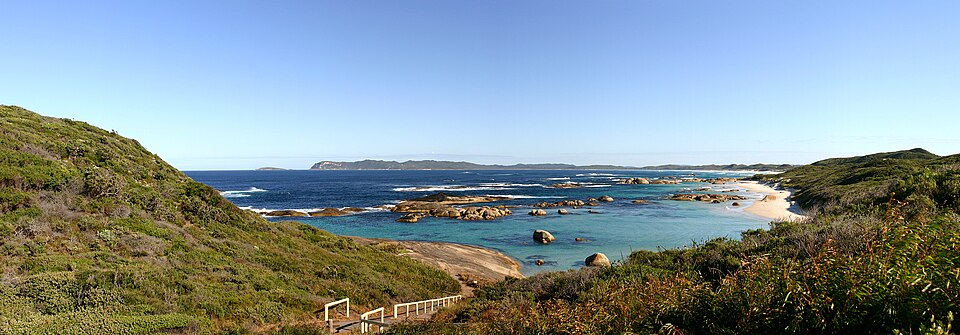
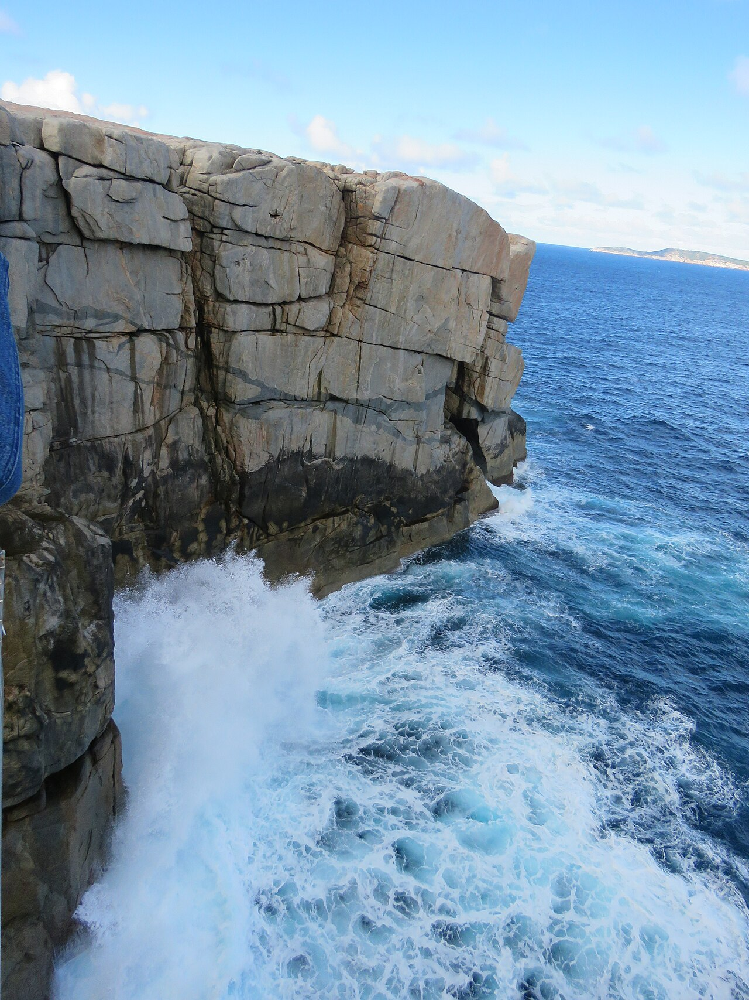
ALBANY · D7 备选
Albany 海岸备选
不是固定行程，只在 Denmark 海岸施工或天气不适合、且当天状态允许时作为替代观景。
所在行程：D7 11/20 备选
地址：Torndirrup National Park / Albany WA
亮点：The Gap、Natural Bridge、海岸平台。
注意：风大必须牵好孩子；若会拉长车程就放弃。
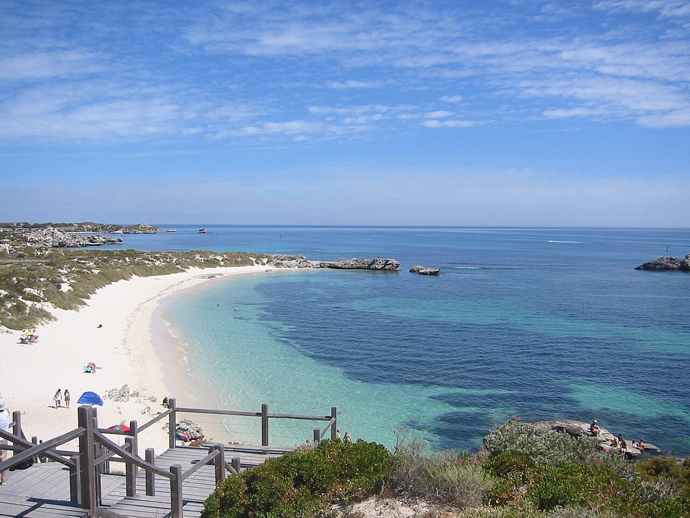
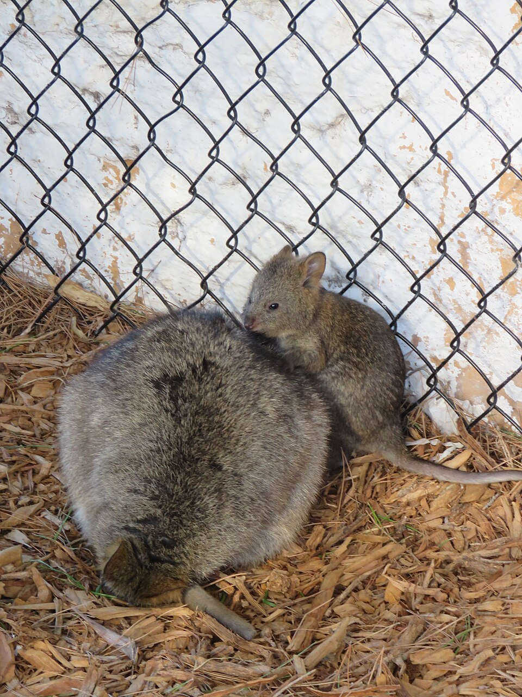
美食信息
按房车南线当天位置重排：优先 Google / 公开评分高、顺路、适合家庭、可外带或停车压力较小的当地餐厅。
| 日期 | 优先吃这里 | 备选 | 执行建议 |
|---|---|---|---|
| D1 11/14 | The Local Shack Forrestfield | Forrestfield Kebab House / 机场轻食 | 不为了吃饭进 CBD，落地后在机场或酒店附近吃，休息优先。 |
| D2 11/15 | Vasse Village by Bunbury Farmers Market | Bunbury Farmers Market / Busselton 超市采购 | 当天重点是取车、采购和移动；Vasse 更靠近 Busselton，Bunbury 适合中途停车。 |
| D3 11/16 | Shelter Brewing Co. | The Goose / Busselton Foreshore | Shelter 在 Jetty 脚下、家庭友好，适合小火车后午餐；热门时段建议订位。 |
| D4 11/17 | Margaret River Bakery | Millers Ice Cream / Margaret River 小镇咖啡 | 海滩和森林日，午餐用高分 bakery 或外带最灵活，避免晚餐订死。 |
| D5 11/18 | Blackwood Cafe, Nannup | Nannup Bakery / RAC Karri Valley 自煮 | Nannup 是转场中段休息点；Karri Valley 晚上以营地或 resort 餐饮为备选。 |
| D6 11/19 | Massimo's Place, Denmark | Boston Brewing Co. / Denmark Bakery | Tree Top Walk 后到 Denmark，抵达早可吃高分 pizza；若太累就外带或营地解决。 |
| D7 11/20 | 124 Deli, Restaurant & Bakery, Kojonup | Denmark Bakery / Massimo's 外带 | 海岸弹性日，午餐不要订死；晚上到 Kojonup 后优先简单快吃，提前备一点食材。 |
| D8 11/21 | Little Creatures Fremantle | Cicerello's Fremantle / Woodman Point 自煮 | 返程和洗衣日，若 15:00 前入营且体力好，再去 Fremantle 港边吃饭。 |
| D9 11/22 | Rottnest Bakery | Hotel Rottnest / Little Creatures Fremantle | 岛上午餐以顺路和排队短为准，回大陆后再决定是否正式晚餐。 |
| D10 11/23 | Perth Airport T1 轻食 | The Local Shack Forrestfield / 咖啡三明治 | 还车日不订餐，避免影响清洁、排污、加油和到机场时间。 |
PERTH AIRPORT · D1 晚餐
The Local Shack Forrestfield
落地后不进 CBD 的低风险晚餐点，离 Forrestfield / 机场住宿区近，适合带孩子简单吃完休息。
公开评分：TableAgent 可见约 4.4 / 10 votes，出发前用 Google Maps 复核。
地址：20 Strelitzia Ave, Forrestfield WA 6058
点单方向：burger、grill、share plates、儿童友好简餐。
建议：D1 不为了餐厅绕路；若太累，机场或酒店轻食即可。
VASSE / BUNBURY · D2 采购午餐
Vasse Village / Bunbury Farmers Market
D2 最适合把采购和简餐合并处理，Vasse 更靠近 Busselton，Bunbury 更适合中途休息。
公开评分：Vasse Village 约 4.8 / 900+；Bunbury Farmers Market 约 4.7 / 9,000+。
地址：4 Orchard Pl, Vasse WA 6280；2 Vittoria Rd, Glen Iris WA 6230
点单方向：咖啡、pies、salads、ready meals、水果、肉类和房车食材。
建议：先看 D2 实际取车时间；时间紧就直接去 Vasse，少停一次。
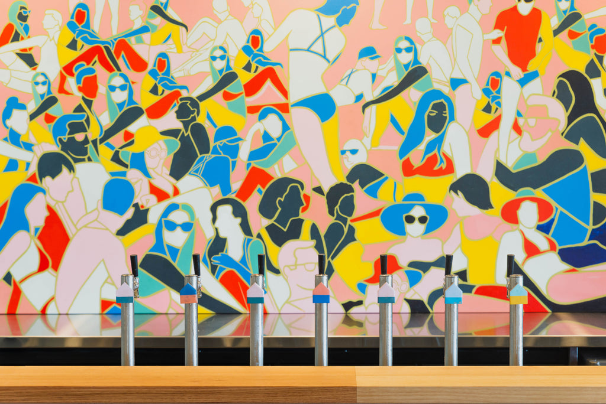
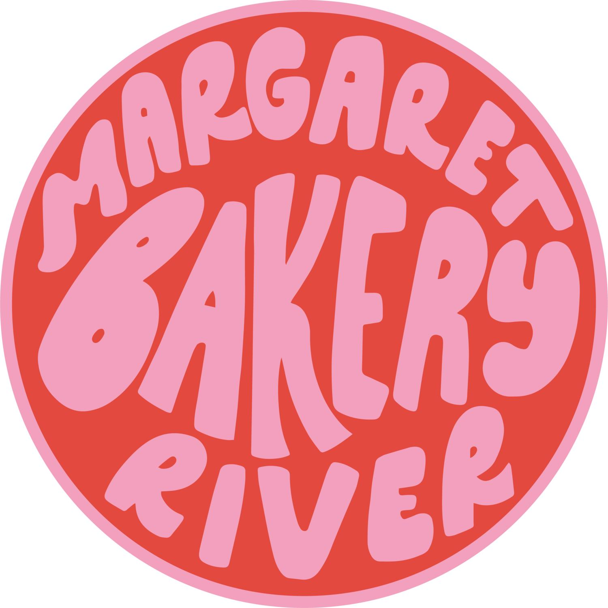
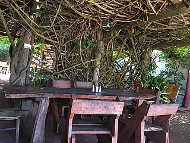
NANNUP · D5 午餐
Blackwood Cafe
Nannup 主街上的中途休息餐，适合从 Margaret River 到 Karri Valley 的转场日补能。
公开评分：约 4.2-4.3，评论量数百，出发前复核。
地址：24 Warren Rd, Nannup WA 6275
点单方向：咖啡、brunch、burger、cake、儿童友好简餐。
建议：不预订也可以；若停车不顺就改 bakery 外带。
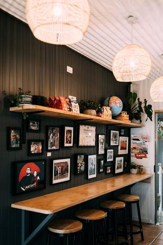
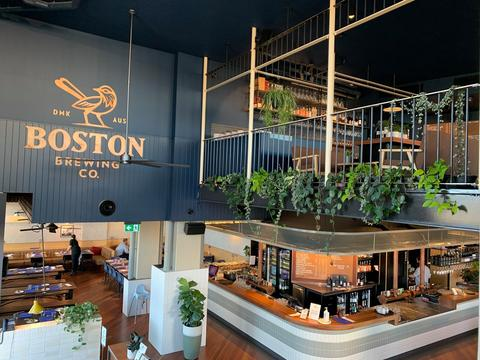
KOJONUP · D7 晚餐
124 Deli, Restaurant & Bakery
Kojonup 过夜这天选择有限，这家在 Albany Highway 上，适合到营地前后快速解决晚餐或外带。
公开评分：公开聚合页可见约 4.5 / 40+ 评论，出发前用 Google Maps 复核。
地址：124 Albany Hwy, Kojonup WA 6395
点单方向：pies、burger、fish & chips、咖啡、简餐外带。
建议：D7 返程日不要订复杂晚餐；若营业时间不合适，就营地自煮。
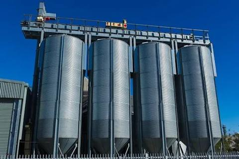
ROTTNEST · D9 午餐
Rottnest Bakery
岛上最省心的午餐/点心点，适合不想被正餐时间绑住的亲子日归。
公开评分：约 4.0-4.2，评论量数百，出发前复核。
地址：Somerville Ave, Rottnest Island WA 6161
点单方向：pie、sausage roll、sandwich、甜点、咖啡。
建议：高峰排队就换 Hotel Rottnest 或简单外带，别影响回船。
评分来自公开 Google / 餐饮聚合页和当地旅游站点的可见信息，餐厅评分、营业时间和假期排班变化快，请出发前 1-2 周再用 Google Maps 复核。
体验信息
把这条南线真正会发生的体验拆出来：固定项目、可取消项目、营地恢复和海岛日分开看。
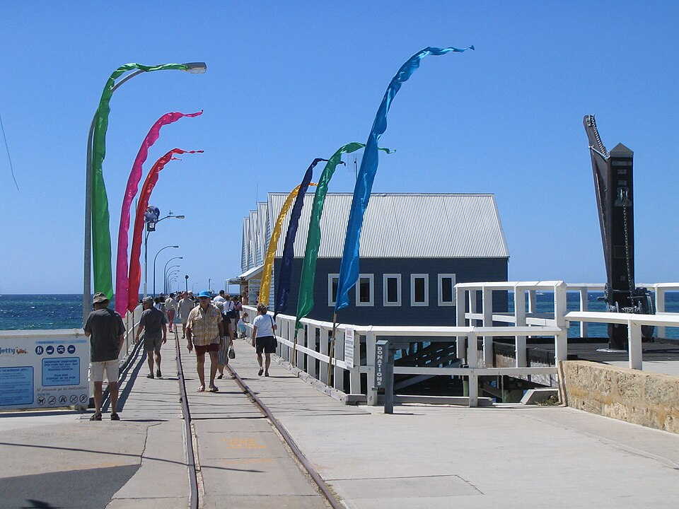
野生动物 · D4
Hamelin Bay 远观鳐鱼
不把“看到鳐鱼”当保证项，现场有就看，没有就当成玩沙和海湾散步。
建议时间：上午 1-1.5 小时
适合：孩子玩沙、轻松看海。
安全：不触摸、不投喂、不追赶。
取消策略：风浪大就缩短，回小镇或营地休息。
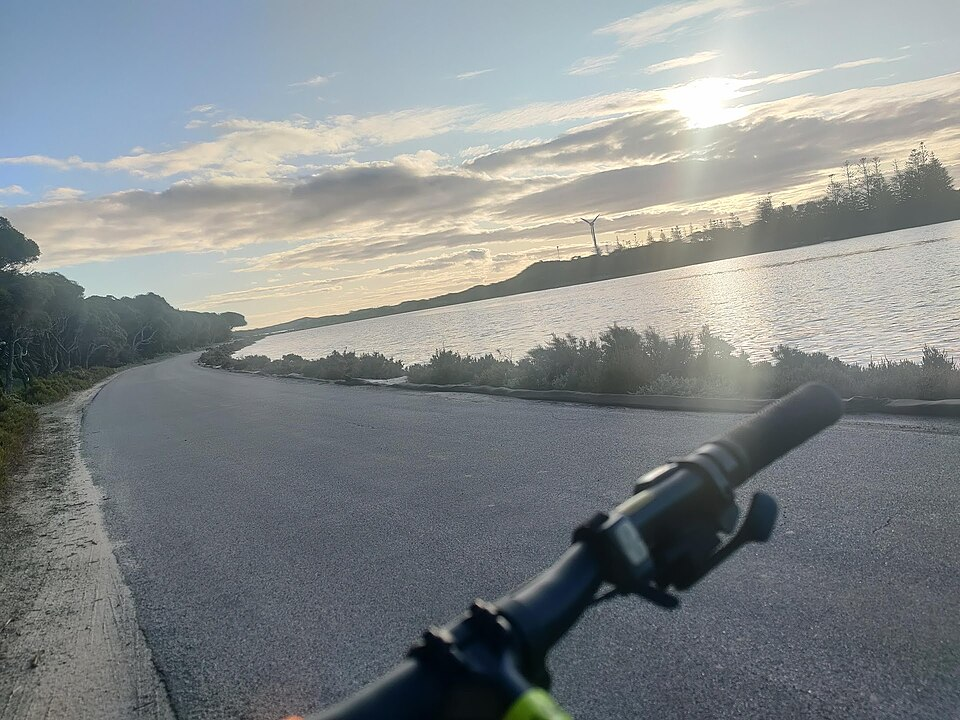
准备与提醒
这版重点是房车交接、营地入住、少量必须预订项目和返程还车节奏。
出发前确认
- D1 机场附近住宿、D2-D9 营地 powered site、入住时间和 late check-in 规则。
- 房车合同、主驾驶信用卡、国际驾照翻译件、儿童座椅、额外驾驶员和限高尺寸。
- Busselton Jetty 上午场、Valley of the Giants Tree Top Walk、Rottnest 往返渡轮和码头接送。
- 下载离线地图，标记超市、加油站、dump point、饮用水点和每晚营地地址。
- 南部海岸风大，带防风薄外套；转场日备足水、零食和儿童路上活动。
亲子节奏
- 每天只设一个“必须完成”的主体验，其余作为天气和体力弹性项。
- Margaret River 连住两晚、Woodman Point 连住两晚，用营地时间抵消转场疲劳。
- D2、D6、D7、D8 都是移动日，不额外硬塞景点，确保天黑前入营。
- 野生动物只远观，不投喂 Quokka、鳐鱼或海鸟。
- 餐饮以超市采购、自煮、外带和顺路简餐为主，少做不可取消的晚餐预订。
英文备用
- Could we have a child seat, please? 请问可以提供儿童座椅吗？
- Is this site powered and suitable for our campervan? 这个营位有电并适合我们的房车吗？
- Where is the dump point and drinking water tap? 排污点和饮用水龙头在哪里？
- Could you show us how to empty the toilet cassette? 可以教我们怎么清空厕所盒吗？
- Do we need to book this tour in advance? 这个项目需要提前预约吗？
当地注意
- 澳大利亚左侧行驶，环岛让右，学校区域限速严格。
- 房车进停车场、加油站和树枝较低路段时先看限高，倒车和会车慢一点。
- 海岸风浪变化快，只在有救生员或明确安全标识的区域下水。
- 多数地方刷卡方便，但小镇停车、洗衣或临时摊位可备少量现金。
- Denmark 海岸按施工、风浪和天气当天决定，不适合就改小镇或 Albany 备选。
- D10 预留清洁、排污、加油和还车缓冲，不把 Rottnest 或远景点挪到返程日。